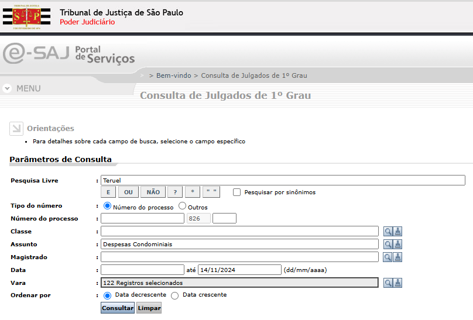
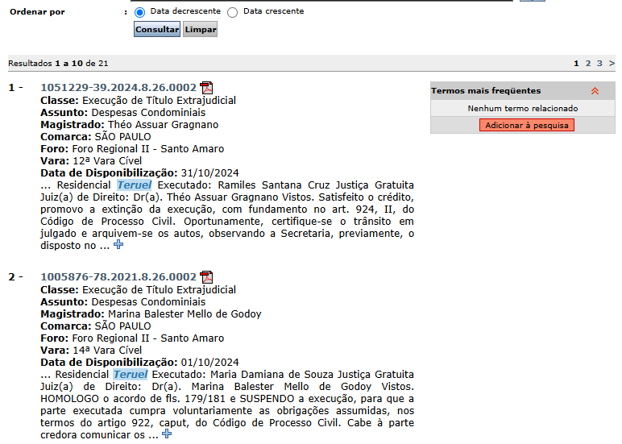
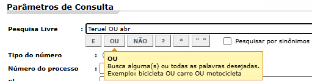
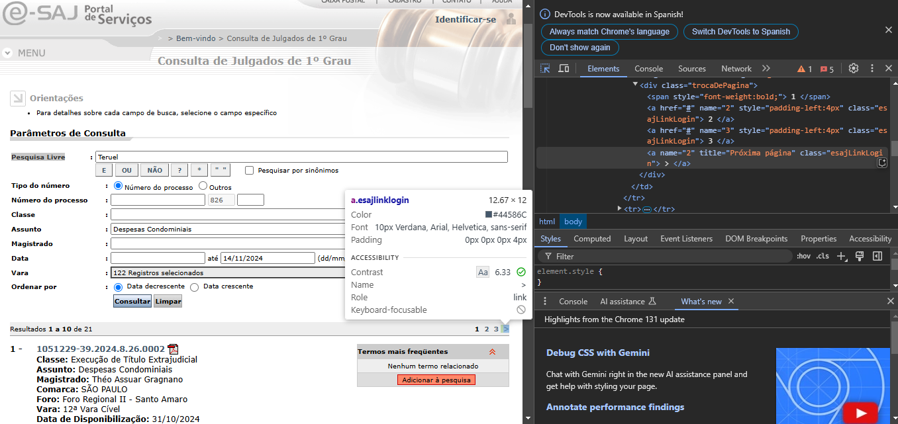
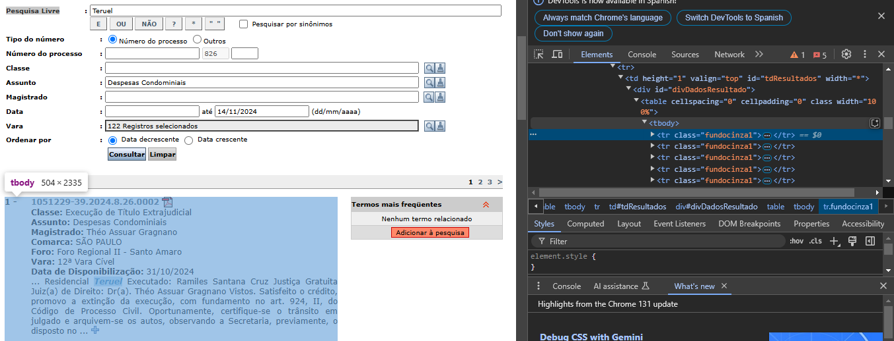

# Cargar librerías
library(selenider)
# Términos a buscar
words <- c("Teruel", "abr")
# string completo de los términos de interés
search_term <- paste0(words, collapse = "+OU+")
# Defining the url
url <- paste0(
"http://esaj.tjsp.jus.br/cjpg/pesquisar.do?",
"dadosConsulta.pesquisaLivre=", URLencode(search_term),
"&tipoNumero=UNIFICADO&numeroDigitoAnoUnificado=&foroNumeroUnificado=&dadosConsulta.nuProcesso=&dadosConsulta.nuProcessoAntigo=&classeTreeSelection.values=&classeTreeSelection.text=&assuntoTreeSelection.values=10467&assuntoTreeSelection.text=Despesas+Condominiais&agenteSelectedEntitiesList=&contadoragente=0&contadorMaioragente=0&cdAgente=&nmAgente=&dadosConsulta.dtInicio=&dadosConsulta.dtFim=14%2F11%2F2024&varasTreeSelection.values=2-2723%2C2-6843%2C2-997%2C2-203%2C2-6874%2C2-7386%2C2-3772%2C2-9%2C2-2894%2C2-501%2C2-2%2C2-5221%2C2-3820%2C2-6873%2C2-998%2C2-3127%2C2-6844%2C2-3710%2C2-1001%2C2-103%2C2-6875%2C2-7385%2C2-3534%2C2-204%2C2-2602%2C2-6865%2C2-502%2C2-5490%2C2-3979%2C2-8%2C2-5689%2C2-6350%2C2-7387%2C2-7388%2C2-102%2C2-5610%2C2-5717%2C2-6845%2C2-999%2C2-13%2C2-6872%2C2-6841%2C2-321%2C2-4%2C2-5442%2C2-6883%2C2-3868%2C2-202%2C2-5757%2C2-2005%2C2-4864%2C2-2003%2C2-5569%2C2-3026%2C2-601%2C2-6881%2C2-6890%2C2-3469%2C2-5323%2C2-15%2C2-6870%2C2-11%2C2-6888%2C2-1848%2C2-2004%2C2-6878%2C2-5742%2C2-604%2C2-603%2C2-3389%2C2-4367%2C2-5099%2C2-1673%2C2-901%2C2-5633%2C2-101%2C2-6312%2C2-7221%2C2-505%2C2-4684%2C2-6889%2C2-6879%2C2-10%2C2-3589%2C2-6867%2C2-6866%2C2-5%2C2-5649%2C2-6%2C2-7%2C2-6868%2C2-504%2C2-6876%2C2-503%2C2-6887%2C2-4499%2C2-201%2C2-3634%2C2-205%2C2-3853%2C2-6886%2C2-602%2C2-3952%2C2-3199%2C2-3%2C2-6869%2C2-506%2C2-6862%2C2-2109%2C2-900%2C2-12%2C2-5528%2C2-3676%2C2-14%2C2-1900%2C2-6840%2C2-6871%2C2-1%2C2-3280%2C2-703%2C2-3910%2C2-1697&varasTreeSelection.text=122+Registros+selecionados&dadosConsulta.ordenacao=DESC")
# Vamos a permitir 15 segundos de espera
session <- selenider_session(
"selenium",
#options = selenium_options(server_options = NULL),
"firefox",
timeout = 15
)Hace poco revisé una de las muchas opciones de trabajo remoto que existen para obtener ingresos en plataformas. Apareció una que me llamó mucho la atención en Upwork:
La descripción del trabajo: Web Scraping expert - in R
I am looking for someone to help me scrape data from a website using R.
I am trying to scrape information from lawsuits on the website of the Superior Court of São Paulo (https://esaj.tjsp.jus.br/cjpg/). I wrote the attached R code using Rvest and it works partially. I have successfully extracted some of the data I need (see the attached output). However:
My code only extracts the information for one keyword. When I add more search terms, I get an error. I’ve tried using a for loop to generate different URLs, but I keep getting an error. I would like to change the code so that I can extract data for different keywords.
The second problem is that my sample code only extracts information from the results that are on the first page, but not for the next pages. This happens because I am using Rvest which does not work on javascript, in this sense I would like to have this code adapted to R selenium or other R package so that I can extract the data for all page results.
I would like to have as outputs the R script and the final dataset
Decidí intentarlo con selenider porque: la persona lo sugierió, y permite hacer clic en un elemento HTML, ya sea simulando un clic del mouse o activando el evento “clic” del elemento.
Este es un pantallazo de la estructura de la página que queremos, donde estoy buscando la palabra clave “Teruel”:

Observen que tenemos 21 resultados (es posible que para la fecha en que tú consultes la página cambie el dato, depende si eliminan o agregan entradas):

El primer problema que enfrenta la persona es la búsqueda de varios términos o palabras, así que vamos a intentarlo manualmente. Usamos el botón dispuesto “OU” y clic en Consultar:

Reviso el cambio en la URL, comparo el resultado de la búsqueda de “Teruel” versus el resultado de la búsqueda de “Teruel OU abr”. Para efectos de lectura fácil, omitiré cierto trozo del string:
Primera búsqueda
https://esaj.tjsp.jus.br/cjpg/pesquisar.do?conversationId=&dadosConsulta.pesquisaLivre=Teruel&tipoNumero=UNIFICADO&numeroDigitoAnoUnificado=&foroNumeroUnificado=&dadosConsulta.nuProcesso=&dadosConsulta.nuProcessoAntigo=&classeTreeSelection.values=&classeTreeSelection.text=&assuntoTreeSelection.values=10467&assuntoTreeSelection.text=Despesas+Condominiais&agenteSelectedEntitiesList=&contadoragente=0&contadorMaioragente=0&cdAgente=&nmAgente=&dadosConsulta.dtInicio=&dadosConsulta.dtFim=14%2F11%2F2024&&varasTreeSelection.text=122+Registros+selecionados&dadosConsulta.ordenacao=DESCSegunda búsqueda
https://esaj.tjsp.jus.br/cjpg/pesquisar.do?conversationId=&dadosConsulta.pesquisaLivre=Teruel+OU+abr&tipoNumero=UNIFICADO&numeroDigitoAnoUnificado=&foroNumeroUnificado=&dadosConsulta.nuProcesso=&dadosConsulta.nuProcessoAntigo=&classeTreeSelection.values=&classeTreeSelection.text=&assuntoTreeSelection.values=10467&assuntoTreeSelection.text=Despesas+Condominiais&agenteSelectedEntitiesList=&contadoragente=0&contadorMaioragente=0&cdAgente=&nmAgente=&dadosConsulta.dtInicio=&dadosConsulta.dtFim=14%2F11%2F2024&&varasTreeSelection.text=122+Registros+selecionados&dadosConsulta.ordenacao=DESCEl cambio radica en: dadosConsulta.pesquisaLivre.
Para el segundo problema debemos revisar con F12 la estructura de la página, buscamos la flecha que gestiona el cambio entre páginas de los resultados. Queremos hacer clic en esa flecha:

Cuando ya lo tenemos identificado, nuestra labor se centrará en “raspar” los datos:

Con esto en mente iniciamos nuestro código:
Abrimos la página.
Creamos una función para extraer los datos.
Determinamos el número de páginas que tiene nuestra consulta. Esto para sabe cuántas veces debemos “dar clic” a las flechas.
Generamos un
for looppara leer toda la información y guardarla en undata.frame.
# Abrir página web
open_url(url)
# Función para extraer datos de una página
consolidar_resultados <- function(pagina) {
cat("INICIO DE LECTURA DE PÁGINA", "\n")
obtener_texto <- function(elemento, idx, replace_pattern = NULL) {
texto <- elemento[[idx]] |>
find_element("td") |>
elem_text() |>
stringr::str_squish()
if (!is.null(replace_pattern)) {
texto <- gsub(pattern = replace_pattern[1], replacement = replace_pattern[2], texto)
}
return(texto)
}
articulos <- pagina |>
lapply(\(x) x |> find_elements(xpath = "./td/table/tbody/tr"))
cat("Leyendo título", "\n")
columna_1 <- articulos |> lapply(\(x) x[[1]] |> find_element("span") |> elem_text())
cat("Leyendo Classe", "\n")
columna_2 <- articulos |> lapply(\(x) obtener_texto(x, 2, c("Classe: ", "")))
cat("Leyendo Assunto", "\n")
columna_3 <- articulos |> lapply(\(x) obtener_texto(x, 3, c("Assunto: ", "")))
cat("Leyendo Magistrado", "\n")
columna_4 <- articulos |> lapply(\(x) obtener_texto(x, 4, c("Magistrado: ", "")))
cat("Leyendo Comarca", "\n")
columna_5 <- articulos |> lapply(\(x) obtener_texto(x, 5, c("Comarca: ", "")))
cat("Leyendo Foro", "\n")
columna_6 <- articulos |> lapply(\(x) obtener_texto(x, 6, c("Foro: ", "")))
cat("Leyendo Vara", "\n")
columna_7 <- articulos |> lapply(\(x) obtener_texto(x, 7, c("Vara: ", "")))
cat("Leyendo Data_de_Disponibilização", "\n")
columna_8 <- articulos |> lapply(\(x) obtener_texto(x, 8, c("Data de Disponibilização: ", "")))
cat("Leyendo Decision", "\n")
columna_9 <- articulos |> lapply(\(x) x[[9]] |> find_element("span") |> elem_text() |> stringr::str_squish())
cat("FIN DE LECTURA DE PÁGINA", "\n")
return(list(
titulo = columna_1,
Classe = columna_2,
Assunto = columna_3,
Magistrado = columna_4,
Comarca = columna_5,
Foro = columna_6,
Vara = columna_7,
Data_de_Disponibilização = columna_8,
Decision = columna_9
))
}
# Contar cantidad de páginas por resultado
pags <- s(".trocaDePagina") |>
find_elements("a") |>
as.list() |>
length() # la última es la flecha (la usaremos más adelante)
ifelse(pags[1] == -1, pags[1] <- 1, pags[1] <- pags[1])[1] 3data_completo <- unname(data.frame())
for (pagina in 1:pags) {
cat(paste0("Estamos en la página: ", pagina, "\n"))
recolectar <- s("#divDadosResultado") |>
find_elements(xpath = "./table/tbody/tr") |>
as.list()
resultados <- consolidar_resultados(recolectar)
temporal <- resultados |>
purrr::map(~ do.call(rbind, .x) |>
unlist()) |>
data.frame()
data_completo <- rbind(data_completo, temporal)
temporal <- unname(data.frame())
if (pagina == pags) {
break()
} else {
ir_a <- as.numeric(pagina) + 1
cat("\n","\n","____PASANDO PÁGINA____", "\n","\n")
s(".trocaDePagina") |>
find_element(name = as.character(ir_a)) |>
elem_click()
Sys.sleep(10)
}
}Estamos en la página: 1
INICIO DE LECTURA DE PÁGINA
Leyendo título
Leyendo Classe
Leyendo Assunto
Leyendo Magistrado
Leyendo Comarca
Leyendo Foro
Leyendo Vara
Leyendo Data_de_Disponibilização
Leyendo Decision
FIN DE LECTURA DE PÁGINA
____PASANDO PÁGINA____
Estamos en la página: 2
INICIO DE LECTURA DE PÁGINA
Leyendo título
Leyendo Classe
Leyendo Assunto
Leyendo Magistrado
Leyendo Comarca
Leyendo Foro
Leyendo Vara
Leyendo Data_de_Disponibilização
Leyendo Decision
FIN DE LECTURA DE PÁGINA
____PASANDO PÁGINA____
Estamos en la página: 3
INICIO DE LECTURA DE PÁGINA
Leyendo título
Leyendo Classe
Leyendo Assunto
Leyendo Magistrado
Leyendo Comarca
Leyendo Foro
Leyendo Vara
Leyendo Data_de_Disponibilização
Leyendo Decision
FIN DE LECTURA DE PÁGINA Extracción final
Ahora nuestra información organizada:
data_completo titulo Classe
1 1051229-39.2024.8.26.0002 Execução de Título Extrajudicial
2 1005876-78.2021.8.26.0002 Execução de Título Extrajudicial
3 1005870-71.2021.8.26.0002 Execução de Título Extrajudicial
4 1005878-48.2021.8.26.0002 Execução de Título Extrajudicial
5 1017042-05.2024.8.26.0002 Execução de Título Extrajudicial
6 1051406-03.2024.8.26.0002 Execução de Título Extrajudicial
7 1005664-57.2021.8.26.0002 Execução de Título Extrajudicial
8 1005872-41.2021.8.26.0002 Execução de Título Extrajudicial
9 1005872-41.2021.8.26.0002 Execução de Título Extrajudicial
10 1005656-80.2021.8.26.0002 Execução de Título Extrajudicial
11 1005653-28.2021.8.26.0002 Execução de Título Extrajudicial
12 1005656-80.2021.8.26.0002 Execução de Título Extrajudicial
13 1005879-33.2021.8.26.0002 Execução de Título Extrajudicial
14 1014990-41.2021.8.26.0002 Execução de Título Extrajudicial
15 1014990-41.2021.8.26.0002 Execução de Título Extrajudicial
16 1014990-41.2021.8.26.0002 Execução de Título Extrajudicial
17 1005653-28.2021.8.26.0002 Execução de Título Extrajudicial
18 1005656-80.2021.8.26.0002 Execução de Título Extrajudicial
19 1005680-11.2021.8.26.0002 Execução de Título Extrajudicial
20 1005675-86.2021.8.26.0002 Execução de Título Extrajudicial
21 1005877-63.2021.8.26.0002 Execução de Título Extrajudicial
22 0083447-94.2011.8.26.0002 Procedimento Comum Cível
23 1019510-54.2015.8.26.0002 Procedimento Comum Cível
24 0011321-80.2010.8.26.0002 Procedimento Comum Cível
Assunto Magistrado Comarca
1 Despesas Condominiais Théo Assuar Gragnano SÃO PAULO
2 Despesas Condominiais Marina Balester Mello de Godoy SÃO PAULO
3 Despesas Condominiais Emanuel Brandão Filho SÃO PAULO
4 Despesas Condominiais Eurico Leonel Peixoto Filho SÃO PAULO
5 Despesas Condominiais Théo Assuar Gragnano SÃO PAULO
6 Despesas Condominiais LUIZ RAPHAEL NARDY LENCIONI VALDEZ SÃO PAULO
7 Despesas Condominiais ANDERSON CORTEZ MENDES SÃO PAULO
8 Despesas Condominiais ROGE NAIM TENN SÃO PAULO
9 Despesas Condominiais VANESSA SFEIR SÃO PAULO
10 Despesas Condominiais VANESSA SFEIR SÃO PAULO
11 Despesas Condominiais ALEXANDRE BATISTA ALVES SÃO PAULO
12 Despesas Condominiais Fernanda Soares Fialdini SÃO PAULO
13 Despesas Condominiais Guilherme Silva e Souza SÃO PAULO
14 Despesas Condominiais Ricardo Hoffmann SÃO PAULO
15 Despesas Condominiais Ricardo Hoffmann SÃO PAULO
16 Despesas Condominiais Ricardo Hoffmann SÃO PAULO
17 Despesas Condominiais ALEXANDRE BATISTA ALVES SÃO PAULO
18 Despesas Condominiais Fernanda Soares Fialdini SÃO PAULO
19 Despesas Condominiais FABIANA FEHER RECASENS SÃO PAULO
20 Despesas Condominiais Guilherme Duran Depieri SÃO PAULO
21 Despesas Condominiais Théo Assuar Gragnano SÃO PAULO
22 Despesas Condominiais Vanessa Miranda Tavares de Lima SÃO PAULO
23 Despesas Condominiais Carolina Nabarro Munhoz Rossi SÃO PAULO
24 Despesas Condominiais Hertha Helena Rollemberg Padilha de Oliveira SÃO PAULO
Foro Vara Data_de_Disponibilização
1 Foro Regional II - Santo Amaro 12ª Vara Cível 31/10/2024
2 Foro Regional II - Santo Amaro 14ª Vara Cível 01/10/2024
3 Foro Regional II - Santo Amaro 6ª Vara Cível 26/09/2024
4 Foro Regional II - Santo Amaro 5ª Vara Cível 16/09/2024
5 Foro Regional II - Santo Amaro 12ª Vara Cível 13/09/2024
6 Foro Regional II - Santo Amaro 7ª Vara Cível 23/08/2024
7 Foro Regional II - Santo Amaro 9ª Vara Cível 15/03/2024
8 Foro Regional II - Santo Amaro 13ª Vara Cível 19/01/2024
9 Foro Regional II - Santo Amaro 13ª Vara Cível 08/08/2023
10 Foro Regional II - Santo Amaro 13ª Vara Cível 07/07/2023
11 Foro Regional II - Santo Amaro 14ª Vara Cível 24/05/2023
12 Foro Regional II - Santo Amaro 13ª Vara Cível 19/04/2023
13 Foro Regional II - Santo Amaro 1ª Vara Cível 23/02/2023
14 Foro Regional II - Santo Amaro 11ª Vara Cível 19/01/2023
15 Foro Regional II - Santo Amaro 11ª Vara Cível 11/01/2023
16 Foro Regional II - Santo Amaro 11ª Vara Cível 01/09/2022
17 Foro Regional II - Santo Amaro 14ª Vara Cível 26/04/2022
18 Foro Regional II - Santo Amaro 13ª Vara Cível 08/02/2022
19 Foro Regional II - Santo Amaro 1ª Vara Cível 17/12/2021
20 Foro Regional II - Santo Amaro 10ª Vara Cível 25/10/2021
21 Foro Regional II - Santo Amaro 12ª Vara Cível 30/07/2021
22 Foro Regional II - Santo Amaro 4ª Vara Cível 31/10/2016
23 Foro Regional II - Santo Amaro 1ª Vara Cível 28/06/2016
24 Foro Regional II - Santo Amaro 2ª Vara Cível 09/10/2015
Decision
1 ... Residencial Teruel Executado: Ramiles Santana Cruz Justiça Gratuita Juiz(a) de Direito: Dr(a). Théo Assuar Gragnano Vistos. Satisfeito o crédito, promovo a extinção da execução, com fundamento no art. 924, II, do Código de Processo Civil. Oportunamente, certifique-se o trânsito em julgado e arquivem-se os autos, observando a Secretaria, previamente, o disposto no ...
2 ... Residencial Teruel Executado: Maria Damiana de Souza Justiça Gratuita Juiz(a) de Direito: Dr(a). Marina Balester Mello de Godoy Vistos. HOMOLOGO o acordo de fls. 179/181 e SUSPENDO a execução, para que a parte executada cumpra voluntariamente as obrigações assumidas, nos termos do artigo 922, caput, do Código de Processo Civil. Cabe à parte credora comunicar os ...
3 ... Residencial Teruel Executado: Kelly Carolina Pereira Mota C O N C L U S Ã O Em 26 de setembro de 2024, faço estes autos conclusos ao(à) MM(a). Juiz(Juíza) de Direito da 6ª Vara Cível Foro Regional de Santo Amaro, Dr(a). Emanuel Brandão Filho. Eu, (DYK), escr., digitei. Vistos. Fls. 240/253 e 254: 1- Regularizada a representação processual do exequente, expeça-se MLE ...
4 ... Residencial Teruel Executado: Nathália Rodrigues Bazolli CONCLUSÃO Aos 13 de setembro de 2024, faço estes autos conclusos ao(à) MM(a). Juiz(a) de Direito: Dr(a). Eurico Leonel Peixoto Filho. Letícia Minari Biaggioni, Escrevente Técnico Judiciário, M378130. Vistos. Conjunto Residencial Teruel propôs ação de Execução de Título Extrajudicial em face de Nathália ...
5 ... Residencial Teruel Executado: Tatiane Silva de Oliveira Justiça Gratuita Juiz(a) de Direito: Dr(a). Théo Assuar Gragnano Vistos. Ante o acordo firmado entre as partes, suspenda-se o feito, nos termos do art. 922 do Código de Processo Civil. Aguarde-se no arquivo. Intime-se. São Paulo, 13 de setembro de 2024. DOCUMENTO ASSINADO DIGITALMENTE NOS ...
6 ... Residencial Teruel Executado: Cacilda Andre da Silva e outro Vistos HOMOLOGO os termos do acordo entabulado pelas partes, com suspensão da execução nos termos do art. 922 do CPC. Aguarde-se, em arquivo provisório, o cumprimento do acordo. Eventual descumprimento, incumbirá à parte exequente provocar o prosseguimento da execução. Int. São Paulo, 11 de ...
7 ... Residencial Teruel Executado: Dercílio Edimar Rodrigues Vistos, Diante da satisfação da parte exequente, JULGO EXTINTO O PROCESSO, com fundamento no artigo 924, inciso II, do Código de Processo Civil. Inexistindo interesse recursal, certifique a Serventia, desde logo, o trânsito em julgado. LIBERE-SE o montante bloqueado em favor da parte executada. Assim, expeça-se o ...
8 ... Residencial Teruel Executado: Vera Lúcia de Oliveira Em 12 de janeiro de 2024 faço estes autos conclusos ao MM. Juiz de Direito da 1ª Vara Cível de São Roque/SP, Dr. ROGE NAIM TENN. Eu____, Escr. Subscrevi. Vistos. Considerando que houve a quitação da dívida, JULGO EXTINTO o processo, nos termos do artigo 924, inciso II, do Código de Processo Civil. Transitada em ...
9 ... Residencial Teruel Executado: Vera Lúcia de Oliveira Juiz(a) de Direito: Dr(a). VANESSA SFEIR Vistos. 1. Dou por regularizada a representação processual do exequente. 2. Homologo o acordo celebrado pelas partes às fls. 148/149, para que produza seus jurídicos e legais efeitos. 3. Declaro suspenso o processo, com fulcro no artigo 922 do CPC. 4. Arquivem-se os ...
10 ... Residencial Teruel Executado: Cintia Sousa Nascimento Justiça Gratuita Juiz(a) de Direito: Dr(a). VANESSA SFEIR Vistos. Regularizada a representação processual da exequente (fls. 184 e 189/194). HOMOLOGO o acordo celebrado entre as partes (fls. 166/169) e SUSPENDO a execução até seu integral cumprimento, nos moldes do art. 922, do Código de Processo ...
11 ... Residencial Teruel Executado: Aurizene Santos Bonfim Justiça Gratuita Juiz(a) de Direito: Dr(a). ALEXANDRE BATISTA ALVES Vistos. Conjunto Residencial Teruel propôs esta ação de Execução de Título Extrajudicial em face de Aurizene Santos Bonfim. A parte exequente informa a quitação integral do acordo pela executada. Em razão do exposto, JULGO EXTINTO o ...
12 ... Residencial Teruel Executado: Cintia Sousa Nascimento Justiça Gratuita Juiz(a) de Direito: Dr(a). Fernanda Soares Fialdini Vistos. 1. Ante a concordância do exequente (fl. ), proceda a serventia ao desbloqueio dos valores encontrados em contas da executada (fls. 160/161), via Sisbajud. 2. Homologo o acordo celebrado pelas partes às fls. 153/156, para que produza ...
13 ... Residencial Teruel Executado: Paula de Oliveira Costa Justiça Gratuita CONCLUSÃO Em 23 de fevereiro de 2023, faço estes autos conclusos a MM Juiz de Direito, Dra. Guilherme Silva e Souza. Eu, _______(Vithoria Hilinsky, E52052932), Estagiário Nível Superior, subscrevi. Vistos. À vista da petição de fls. 132, considero adimplida a obrigação por parte da ...
14 ... Residencial Teruel Executado: Manelito Fonseca dos Santos- Espólio Justiça Gratuita CONCLUSÃO Em 19 de janeiro, faço estes autos conclusos ao Exmo. Sr. Dr., MM Juiz de Direito abaixo designado na 11º Vara Cível do Foro Regional II - Santo Amaro. Eu ________________, (escr.) subscr. Juiz(a) de Direito: Dr(a). Ricardo Hoffmann Vistos. Com fundamento no artigo 924, II do ...
15 ... Residencial Teruel Executado: Manelito Fonseca dos Santos- Espólio Justiça Gratuita Em 10 de janeiro de 2023�, faço estes autos conclusos ao Exmo. Sr. Dr., MM. Juiz de Direito abaixo designado da 11ª Vara Cível do Foro Regional II - Santo Amaro. Eu, Érica Regina Kunigami, assistente judiciário, subscr. Juiz de Direito: Dr. Ricardo Hoffmann Vistos. As partes ...
16 ... Residencial Teruel Executado: Manelito Fonseca dos Santos Justiça Gratuita CONCLUSÃO Em 01 de setembro, faço estes autos conclusos ao Exmo. Sr. Dr., MM Juiz de Direito abaixo designado na 11º Vara Cível do Foro Regional II - Santo Amaro. Eu ________________, (escr.) subscr. Juiz de Direito: Dr. Ricardo Hoffmann Vistos. Homologo o acordo firmado entre as partes em ...
17 ... Residencial Teruel Executado: Aurizene Santos Bonfim Justiça Gratuita Juiz(a) de Direito: Dr(a). ALEXANDRE BATISTA ALVES Vistos. Homologo o acordo e suspendo, nos termos do CPC, art. 922, o curso da execução para seu cumprimento. Cabe ao credor comunicar os órgãos de proteção ao crédito ou fornecer documento para providências do devedor. Ao término do prazo ...
18 ... Residencial Teruel Executado: Cintia Sousa Nascimento Justiça Gratuita Juiz(a) de Direito: Dr(a). Fernanda Soares Fialdini Vistos. 1. Autos desarquivados, independentemente do recolhimento de custas, em vista da gratuidade concedida ao exequente. 2. Homologo o acordo celebrado pelas partes às fls. 142/144, para que produza seus jurídicos e legais efeitos. 3. ...
19 ... Santos BonfimConjunto Residencial Teruel Executado(s): Izabete Santos Bonfim Juíza de Direito: Drª FABIANA FEHER RECASENS Vistos, Tendo em vista a notícia do bloqueio integral do débito, bem com a inércia da executada e a concordância, implícita, do exequente , JULGO EXTINTA a presente ação de EXECUÇÃO, com fundamento no artigo 924, inciso II, do Código de Processo ...
20 ... Residencial Teruel Executado: Iranildes Elias Teixeira Justiça Gratuita Juiz(a) de Direito: Dr(a). Guilherme Duran Depieri Vistos. Homologo a transação de fls. 134/137, para que surtam os devidos efeitos de direito, nos termos do art. 922 do CPC. Aguarde-se integral cumprimento do acordo, no arquivo, o qual deverá ser informado pela parte exequente para extinção ...
21 ... Residencial Teruel Executado: Maria de Lourdes Ferreira de Oliveira Justiça Gratuita Juiz(a) de Direito: Théo Assuar Gragnano Vistos. 1. Fls 81/84: Satisfeito o crédito, promovo a extinção da execução, com fundamento no art. 924, II, do Código de Processo Civil. 2. Tendo o pagamento sido ultimado extrajudicialmente e antes mesmo da citação, não incidem as custas ...
22 ... 453) até o limite de R$ 372.089,46 (abr/2015). O exequente apresentou cálculo do valor de R$ 7.837,62 como valor devido pelas taxas condominiais até a imissão a posse pelo arrematante. DECIDO. Este processo alcançou sua finalidade. Julgo EXTINTA a presente execução, nos termos do art. 924, II, do CPC. Esta decisão servirá como mandado para fins de cancelamento de eventuais ...
23 ... cobrado sob a rubrica "investimentos abr/2015", no total de R$500,18 e "compl condomínio" set/2014 e abr/2015, impugnados pelos réus, sem que o autor tenha trazido qualquer documento que comprovasse a legitimidade destas cobranças, não juntando aos autos convenção condominial ou assembleia que as tenha aprovado, não tendo o relatório juntado a força probante pretendida, ...
24 ... referentes aos meses de Jul/08, set/08, abr/09 e mai/09, já estariam pagas, e portanto, além de serem excluídas da cobrança, faria jus ao recebimento do dobro do valor cobrado indevidamente. A ré apresenta comprovante de pagamento das despesas condominiais relativas aos meses de Jul/08, set/08, abr/09 e mai/09. Apresenta os recibos da administradora do condomínio e ...Citation
BibTeX citation:
@online{chiquito_valencia2024,
author = {Chiquito Valencia, Cristian},
title = {Web Scraping Con {R}},
date = {2024-11-26},
url = {https://cchiquitovalencia.github.io/posts/2024-11-26-web_scraping_with_R/},
langid = {en}
}
For attribution, please cite this work as:
Chiquito Valencia, Cristian. 2024. “Web Scraping Con R.”
November 26, 2024. https://cchiquitovalencia.github.io/posts/2024-11-26-web_scraping_with_R/.